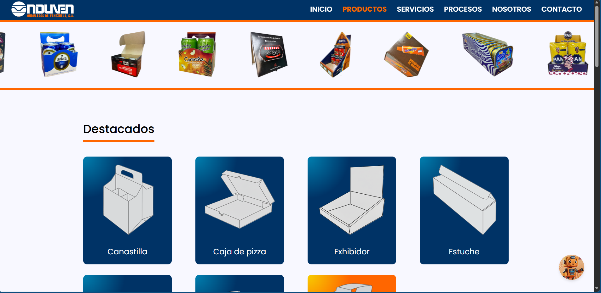
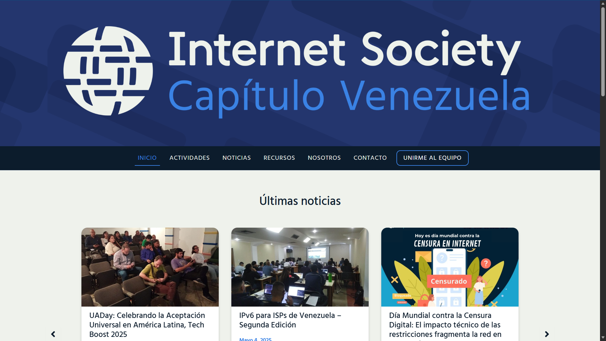
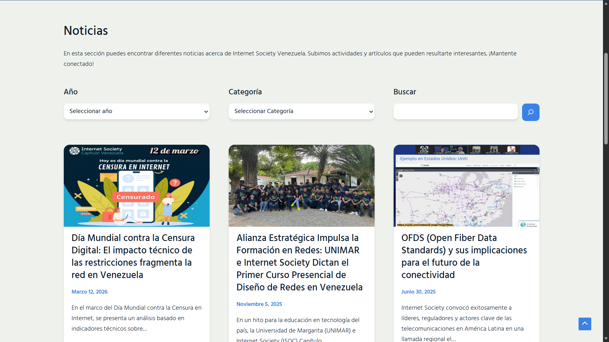
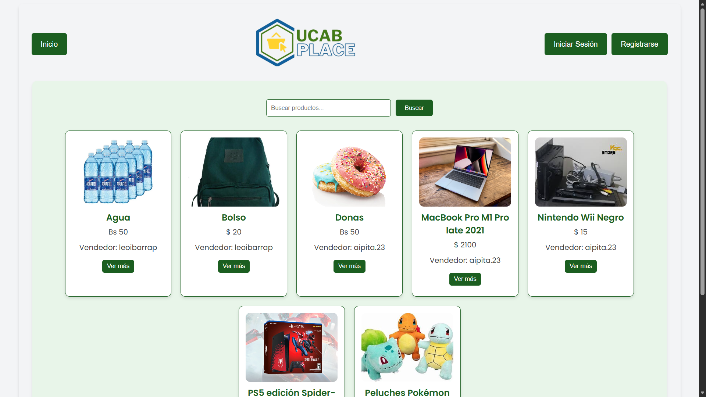
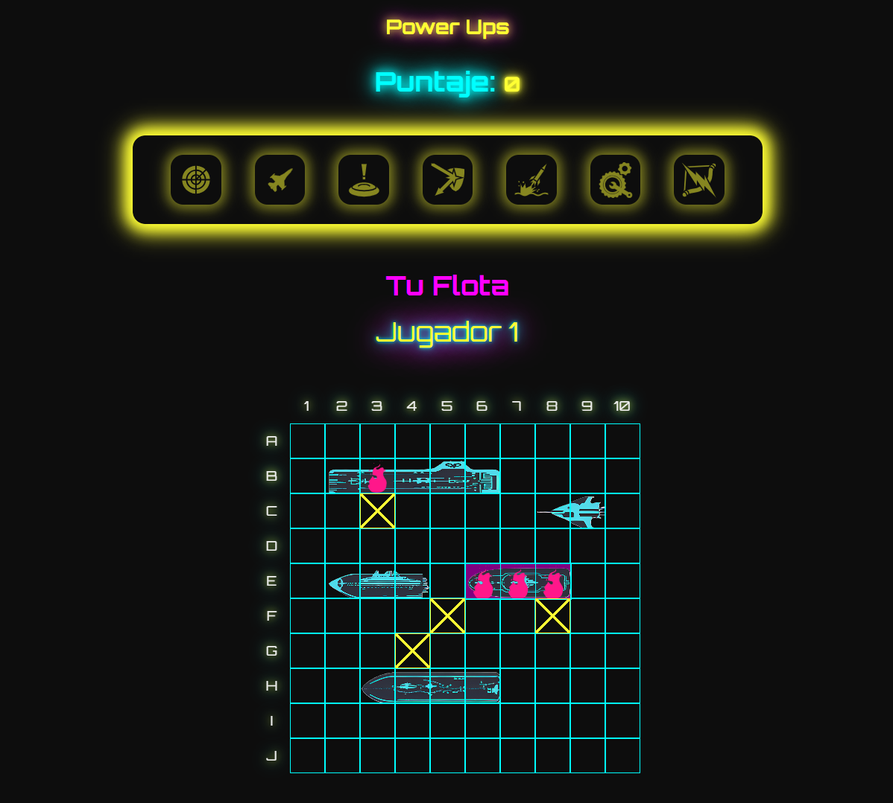
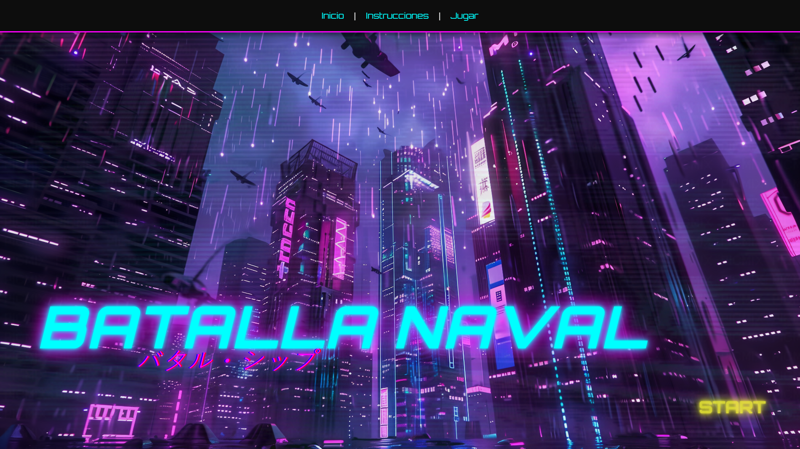
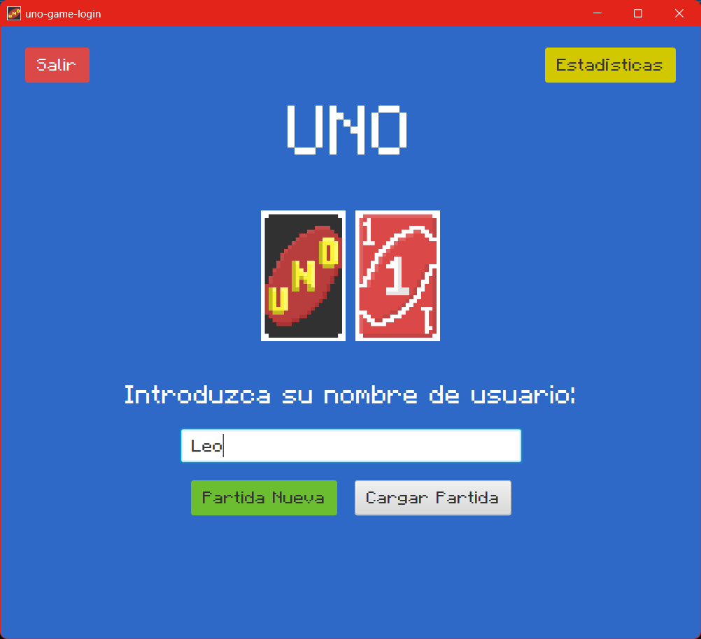
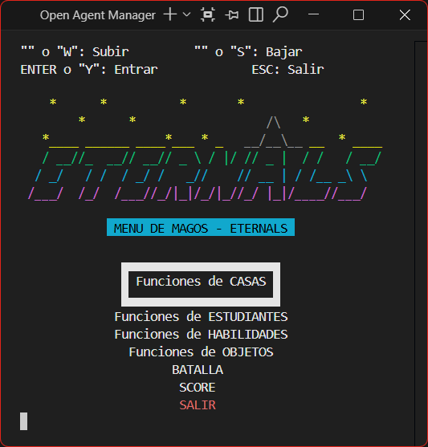
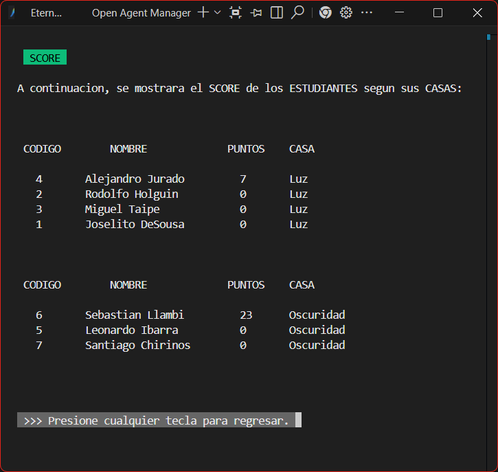

Projects
Here you can find some of my projects, both academic and professional. I have worked on a variety of projects, in different devices and platforms.
Onduven
Website for a Venezuelan company with an integrated chatbot.
Ondulados de Venezuela (Onduven) is a Venezuelan company that specializes in the production of
cardboard boxes and its designs. They have been in the market for over 45 years and they wanted
to renew their image and create a platform where their clients would have a good experience
browsing their products and services.
The website has a simple and intuitive interface, with a chatbot integrated in the website to
answer the clients' most common questions and offer their contact info. The chatbot was done
with Botpress.

ISOC VE
Website for the Internet Society's Venezuelan chapter.
The Internet Society is a non-profit organization that works to promote the development and use
of the Internet. It has 'chapters' all around the world, and the Venezuelan chapter is one of
them.
The website has a simple and modern interface, adapted to the organization's branding. It allows
users to learn about the organization, its mission, vision, values, and the work it does in
Venezuela, centralizing all their information in one place. In the website you can check out all
the activities, news and it provides all the contact information for the organization, including
a step-by-step guide on how to become a member.


ViajesUCAB
Online platform for booking trips, activities and managing reservations.
This has been one of my favorite projects to work on. It was a group project where we had to
create
a web platform for booking trips, activities and managing reservations. We used Node.js for the
backend and PostgreSQL for the database.
The system allows the users to register and login, validating the role of each user and the
permissions associated with their account. Admin users can create new roles specifically for
certain
things, giving specific permissions and showing only the UIs that the user needs, personalizing
the
experience for each role. Standard Client users can search for trips, activities and manage
reservations. Admin users can manage the trips, activities and reservations. In the admin
dashboard,
the admin can download reports that are generated dynamically on PDF format, with information
about
the most popular services. This was done using JsReports.
UCAB Place
E-commerce website made for the UCAB community.
This is an e-commerce website made specifically for the UCAB community, so that students can
help
each
other by selling and buying products. It allows students to register, login and talk to sellers.
To
do
this, we used a simple email verification system to verify that the vendors were in fact UCAB
students.
Once you are logged in, you can browse and search for products. When you find a product you
like,
you
can chat directly with the seller to ask questions or negotiate the price. This was done using
Socket.IO
for real-time communication. When the order is confirmed, the buyer can review the seller and
leave
a comment.
The system also allows the vendors to manage their products and orders, changing the product
info
when
needed.

Futuristic Battleship
Web version of the classic Battleship game with a tournament system.
This is a web version of the classic Battleship game, with a futuristic theme. It can be played
locally in multiplayer mode, opening two browser tabs, or in a tournament mode (up to 16
players) where players
can compete against each other.
The game is played on a 10x10 grid, where each player has a fleet of 10 ships. The goal is to
sink all of the opponent's ships before they sink yours. The game also features a power-up
system, where players can collect power-ups to gain advantages over their opponents.
The game's frontend was made using pure HTML, CSS and JavaScript, with no frameworks or
libraries.
The backend was made using Node.js and Socket.IO for real-time communication between
players.


Pixel UNO
Desktop application for playing UNO against the computer.
The classic UNO game made in a Windows desktop application. We used Java and JavaFX to create
this
game, bringing our own style to it with the pixelated theme. We used Scene Builder to design the
interface, and advanced data structures to create the game logic.
The game allows you to play against the computer, with a simple and intuitive interface. The
game
keeps track of the score that are saved in a JSON file, allowing you to load and continue your
game
whenever you want. You can see all the stats of all the players, including the leaderboards, in
the
stats section.

Cold & Hot Zone
Android applications that communicate in real time.
This was a project that I made with a partner for a manufacturing company. It consists of
two Android applications that communicate in real time using WebSockets, so the company can
monitor the process of quality control and production.
The first app (Cold Zone) is used by the quality control specialist. While he is doing his job,
he enter the data of the products into the app, which is downloaded in an Android tablet,
and the app sends it to the server.
The second app (Hot Zone) is used by the workers in the production line. The app displays
the data in an external monitor powered by a Fire TV Stick connected to the same
network.
They can see the data of the products in real time, and can make decisions based on the data,
minimizing defects and optimizing the production process.
The app periodically saves the data in a local PostgreSQL database, so the company can
analyze the data and make decisions based on it.
Eternals
Wizard-themed videogame that can be played in the Windows terminal.
This is a Wizard-themed videogame that can be played in the Windows terminal. It features a
turn-based combat system, where the player can choose from different spells to defeat the
enemy.
The game was made using C++ and advanced data structures. Every user chooses a house and it
gives you default spells. When you play, you earn points that you can exchange for new spells
and objects. Also, there's a roulette where you can get random rewards.
The game features a leaderboard, where you can see the top players in the game. The animations
are made from scratch using the Windows terminal, with the help of ASCII characters.

